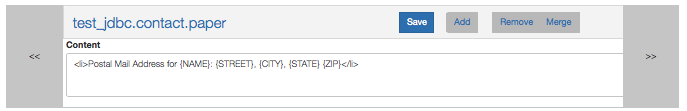
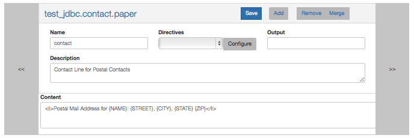
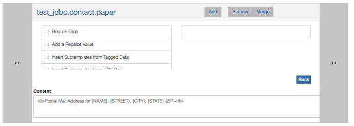
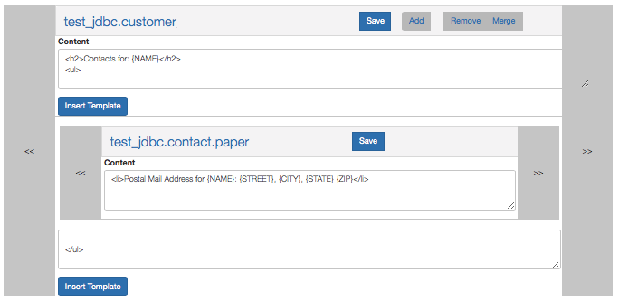
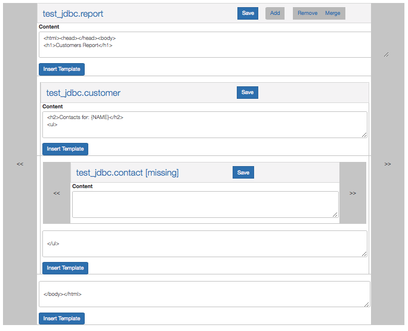

Licensed under the Apache License, Version 2.0 (the "License"); you may not use this file except in compliance
with the License. You may obtain a copy of the License at http://www.apache.org/licenses/LICENSE-2.0.
Unless required by applicable law or agreed to in writing, software distributed under the License is distributed on an
"AS IS" BASIS, WITHOUT WARRANTIES OR CONDITIONS OF ANY KIND, either express or implied. See the License for
the specific language governing permissions and limitations under the License.
The IBM Data Merge Utility is a general purpose tool that merges Templates to create one or more output files with data
from different data sources. The merge process is driven by Template Directives that retrieve data and drive the
replacement of {Tagged} values in the templates and the insertion of sub-templates at book-marks.
Multiple output files can be generated during a merge and written to a .zip or .tar archive that can
subsequently be fetched from the server via an http service.
See the Templates link in the navigation header to access the Template Editor
See the User Guide for details on how to create and use templates.
See the Admin Guide for information on configuring and maintaing the IDMU Server
The IBM Data Merge Utility documentation uses the following terms:
Template: The primary object used by IDMU. A template has the
following attributes:
Template Full Name: Comprised of three parts joined with periods. collection.name.value
Collection: Used to group templates into logical collections
Name: A name for the template
Value: Used when varying sub-templates based on a data value.
Content: The text that is merged and returned as output
Properties: Values such as description and output.
Directives: Instructions for retrieving data to be used in the merge.
Replace Hash: Merge processing performs global search / replace actions based on
a hash of From -> To values called the Replace Hash. From values are {wrapped} in brackets
Tag and Tag Data: A single entry in the Replace Hash. During merge processing a {Tag} is
replaced by Tag Data
Book mark: A special location within the template content where sub-templates are inserted.
Sub-Template: A template that is inserted into another template at a book mark. There is no difference between
a template and a sub-template other than the context in which they are used.
Data Provider: The directive component that retrieves data. There are typically multiple directives
that use data retrieved by a Data Provider in different ways. IDMU Currently supports three data providers, System(Tag) data, JDBC data and CSV data.
Planned enhancements will add HTML, JSON, XML and MongoDB to that list.
A quick introduction to the terms used to describe the user interface components in the template editor.

The Template cover flow is shown at the right, the << and >> scroll buttons allow you to navigate through a list
of templates.

Clicking on the template name will expose or hide the Template Properties pane where you can edit the description and specify
an output file for the template.

Clicking on the Configure button will expose the Template Directives pane where you can add / edit / delete directives.

Sub-templates are displayed as a cover flow when the sub-template that is inserted is varied based on some data.
You can scroll left / right through the different sub-templates that could be inserted at this point.

Sub-templates can be nested to any level. This screen shot shows the test_jdbc.report template, with
a jdbc_customer sub-template (note that this sub-template is "static" and has no left-right scroll indicators).
The test_jdbc.customer sub-template contains a test_jdbc.contact sub-template cover flow. The "[missing]" indicates that
the "default" sub-template is not present.
A few notes about the template editor: The current implementation of the Template Editor is filled with querks and defects.
I'm hoping to have a new editor later this year that is much more functional and intuitive. In the mean time, please
see the editor issues page for the latest on known defects.
Here are a few of the more annoying defects in the current code:
After a save the editor will revert to the first template in the cover flow. For this reason it's best to edit sub-templates in
the context of the parent template rather than at the top level as sub-template cover flows tend to have far fewer entries in
them than the top level cover flow which shows all templates in a collection.
When editing directives, you will have to click the "back" button and then "Save" in order to save any changes. When you
combine this with the failure to report errors on a save, looping back into the directive editor to verify the change was
saved is a multi-step process.
There is currently no way to view or delete a book-mark after the template has been saved. The collection and name values of a bookmark
are fairly evident based on the templates in the sub-template cover flow, and you can usually infer the column name if you have additional
templates with full names that include a column value. At this point in time the only work around is to manually edit templates with a
json editor or the database tool of your choice
The delete or remove template button works WITHOUT A CONFIRMATION so be careful with your mouse around that button.